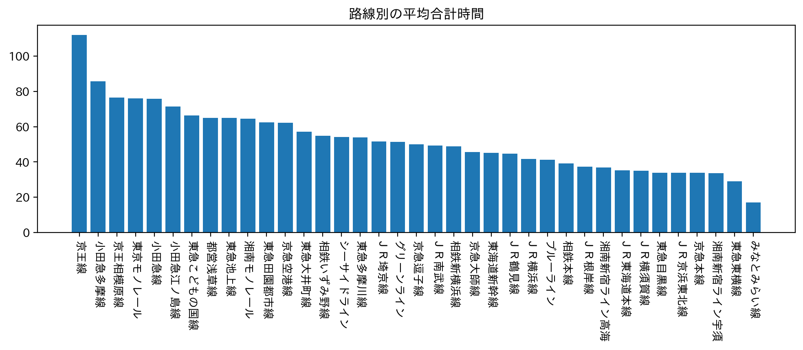
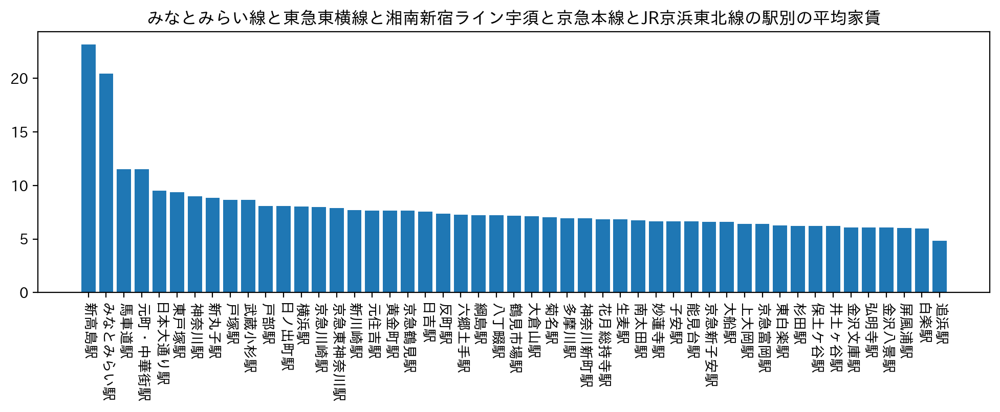
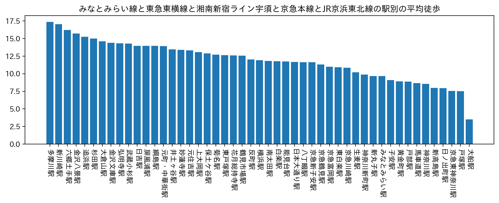

第6回
賃貸分析
まず、合計時間と家賃に重点をおいて調べた。
路線別の合計時間

このグラフから平均合計時間が少ない、みなとみらい線、東急東横線、湘南新宿ライン宇須、京急本線、JR京浜東北線の5路線に絞った。

このグラフから追浜駅から戸部駅まで平均家賃に差は大きくないことが読み取れる。

このグラフから徒歩は10分程度を選ぶとよいと考えた。
黄金町駅、子安駅の二つがあげられる。
結論
これらのグラフから、通学時間が少なく、家賃も平均的である、黄金町駅と子安駅をおすすめする。